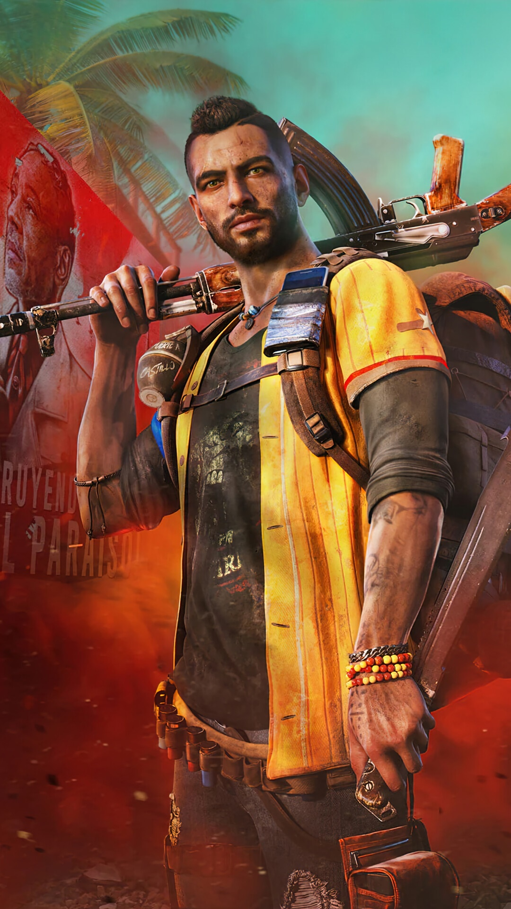
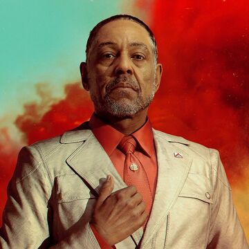

Personagens Principais
Voltar ao Início
|
Armas
Imagem
Nome
Descrição

Dani Rojas
Protagonista. Lutador ou lutadora pela liberdade de Yara.

Antón Castillo
Ditador de Yara. Representa a opressão contra a qual os guerrilheiros lutam.
Chorizo
Um cão adorável e companheiro de luta.